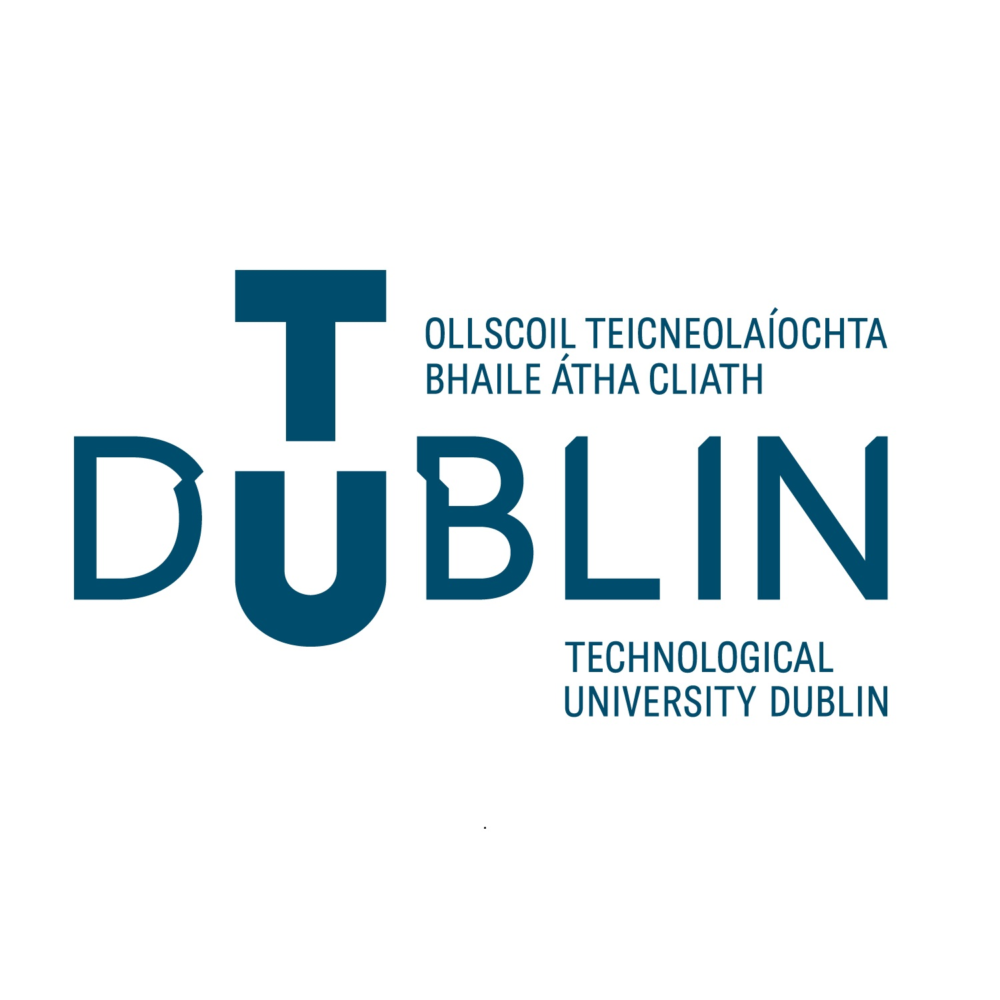

About the meeting
This meeting is to catalyse interactions among Dublin’s remarkably strong community studying decision-making, spanning the fields of neuroscience, psychology, artificial intelligence and psychiatry.
For meeting enquiries, contact Naomi Curnow (curnown@tcd.ie).
Institutions represented

Programme
Session 1 · 1:00–1:40 pm
Evidence accumulation, belief updating and response speed
- Hadiseh HajimohammadiSimon Kelly’s lab, UCD
Neural implementation of adaptive evidence accumulation in volatile and non-volatile environments
- Eva SevensterSeán Froudist-Walsh & Rui Ponte Costa’s labs, TCD & Oxford
Cortically-Embedded RNNs for anatomically-grounded models of cognition.
- Aurora DelzPeter Murphy’s lab, Maynooth University
Mouse cursor movements track belief updating under volatility and are captured by the dynamics of an attractor model
- Naomi CurnowSeán Froudist-Walsh & Konstantinos Tsetsos’s labs, TCD
Do prefrontal cortical gradients affect evidence accumulation strategies across species?
- Samuele GentiliPeter Murphy’s lab, Maynooth University
Interrogating the emergence of supramodal evidence accumulation in multi-task recurrent neural networks
- Speaker to be confirmedRedmond O’Connell’s lab, TCD
Title to be confirmed
- Sarah MoranSimon Kelly & Méadhbh Brosnan’s labs, UCD
Non-rhythmic fluctuations in alpha during continuous monitoring account for response speed variation
- Isabel MilanoSonia Bishop’s lab, TCD
Computational modeling of decision making under ambiguity after partial sleep deprivation
Session 2 · 2:10–2:50 pm
From evidence to action
- Weicheng LianElaine Corbett’s lab, UCD
From evidence to action: the role of motor effort
- Marika ConstantKonstantinos Tsetsos’s lab, TCD
Title to be confirmed
- Edouard DendauwElaine Corbett’s lab, UCD
Preparing to act: our integrated models of decision making disagree
- James McAllisterSeán Froudist-Walsh’s lab, TCD
Impact of prefrontal cortex anatomy on mechanisms of planning-based behaviour across species
- Hannah HayesElaine Corbett’s lab, UCD
A myoelectric interface to study motor effort biases in sensorimotor decision-making
- Sven WientjesKonstantinos Tsetsos’s lab, TCD
Title to be confirmed
- Speaker to be confirmedRedmond O’Connell’s lab, TCD
Title to be confirmed
- Paveen Phon-AmnuaisukClaire Gillan’s lab, TCD
Rapid and scalable computational phenotyping of cognition using simulation-based inference
- Speaker to be confirmedRedmond O’Connell’s lab, TCD
Title to be confirmed
Session 3 · 4:00–4:40 pm
Multisensory decisions, uncertainty and mental health
- John ButlerJohn Butler’s lab, TU Dublin
Modelling audio-visual reaction time with recurrent mean-field networks
- Julia SenfftOndrej Zika’s lab, UCD
The world we expect: how structural priors shape learning under uncertainty in the anxious mind
- Ern WongSonia Bishop’s lab, TCD
Worry predicts pessimistic beliefs under ambiguity
- Xiaohe YuSeán Froudist-Walsh’s lab, TCD
Title to be confirmed
- Maria BerjanoSonia Bishop’s lab, TCD
Decision-making under volatility in anxiety and depression: a computational modelling approach
- Ondrej ZikaOndrej Zika’s lab, UCD
Computational marker of uncertainty sensitivity as a predictor of long-term changes in anxiety symptom severity
- Luianta VerraOndrej Zika’s lab, UCD
Computational mechanisms of aversive generalization and avoidance
- Ellen MooreClaire Gillan’s lab, TCD
Precision functional mapping of mental health dimensions – initial clinical insights
- Hanwen DengClaire Gillan’s lab, TCD
How does mood return to baseline in bipolar disorder? Evidence from EMA
Organised by